Parle. Elle écoute, crée et agit
sur ton ordinateur.
Clipia X8 a deux cerveaux : elle travaille en arrière-plan et reste toujours disponible pour te parler. Elle reste à l'écoute en permanence : tu lui parles, une grande sphère 3D te répond, puis elle ouvre tes fenêtres, installe des logiciels, monte tes vidéos, compose ta musique, code ton site, et reprend les compétences d'OpenClaw. Depuis ton téléphone aussi.
🎬 Clipia X8 en 2 minutes
Présentation avec voix et sous-titres : voix 3D, studio, logithèque, OpenClaw, téléphone. Mets le son 🔊
⬇ Télécharger la présentation · ⬇ Vidéo d'installation · ⬇ Version verticale (Shorts, TikTok, Reels)
🛠 Installer X7 pas à pas (vidéo)
Du téléchargement à la première conversation : choisis tes logiciels, tes cerveaux, ton téléphone.
🧩 Important : l'extension Chrome, les mains de Clipia À INSTALLER
C'est elle qui permet à Clipia de prendre la main sur ton navigateur (tes onglets, tes comptes déjà connectés) : ouvrir des sites, remplir des formulaires, publier tes clips. Elle est fournie dans Clipia ; l'installation prend deux minutes. Rien ne se fait sans ton accord : une carte « Autoriser » ouvre une session de 10 minutes, que tu peux stopper à tout moment.
- Dans Clipia, clique sur « 🧩 Installer l'extension Chrome » (barre latérale ou bandeau de l'accueil), puis « Préparer l'extension ».
- Dans Chrome, ouvre
chrome://extensionset active le Mode développeur. - « Charger l'extension non empaquetée » → choisis le dossier indiqué par Clipia.
- Le statut passe à « connectée » dans Clipia. C'est prêt.
Pas (encore) sur le Chrome Web Store : le mode développeur permet d'installer une extension locale dont tu peux lire tout le code. Elle ne tape jamais tes mots de passe ni ta carte bancaire.
Demande, réponse, action : Clipia X8 en 1 minute DÉMO
Une demande à la voix, la sphère 3D qui répond, le travail qui part en arrière-plan, une routine créée après ton accord, puis le pilotage depuis le téléphone. Scénario mis en scène pour illustrer les fonctions.
Une touche pour lui parler : la barre d'espace NOUVEAU
Clipia parle ? Appuie sur Espace : elle se tait aussitôt et t'écoute. Dis ce que tu veux, rappuie sur Espace pour envoyer. Tu peux l'interrompre à tout moment (option désactivable). Scénario mis en scène.
TikTok Project et YouTube Project NOUVEAU
Clipia t'aide à bâtir une stratégie pour gagner des vues, puis des revenus : niche, plan de 30 jours, scripts, titres, miniatures, clip, publication sur ta chaîne (avec ton accord) et paliers de monétisation expliqués. Aucune promesse de gains : régularité, contenu original, jamais d'achat de vues. Scénario mis en scène.
Nouveautés de la 8.2 8.2
- 💾 Sauvegarder mon IA : un fichier chiffré (mot de passe) vers une clé USB, un dossier Dropbox ou MEGA, ou Dropbox en direct ; réimport complet, l'ancien contenu est mis de côté.
- 🎬 MP3 → clip gratuit, 🎤 chanteur / chanteuse virtuel, 📣 Publier partout (YouTube, TikTok, Instagram…, toujours avec ton accord).
- 🎨 Moteurs de clip : Canva (dans ton compte), Remotion, Revideo, Editly, Shotstack, Creatomate.
- 🧑💻 Visual Studio Code : tes projets s'ouvrent en un clic.
- ⎵ Barre d'espace : elle se tait et t'écoute.
- 🎵 TikTok Project et ▶️ YouTube Project : stratégie, plan, scripts, visibilité, publication, paliers de revenus (sans promesse de gains).
- 📱 QR codes iPhone / Android avec la sphère 3D sur le téléphone, et 🧩 extension Chrome pour qu'elle prenne la main sur le navigateur.
- 🤖 Agent plus autonome : jamais deux fois la même action, vérification avant de conclure, échelle de secours, initiatives proposées.
Deux cerveaux. Toujours disponible. X8
Pendant qu'elle travaille sur ton projet, tu peux continuer à lui parler : elle te répond tout de suite.
🗣 Elle répond, même au travail
« Sur quoi tu travailles ? », « explique-moi », « arrête », « pause » : réponses immédiates, à la voix ou au clavier, sans attendre la fin de la tâche.
⚙️ Travaux en parallèle
Jusqu'à 3 projets en arrière-plan, chacun avec son journal et son suivi en direct. Elle te prévient quand ça avance, sans te couper la parole.
🚀 Lancer mon entreprise
Étude de marché, offre, business plan, site vitrine, devis et factures, démarches, prospection : 10 missions prêtes pour avancer, gagner sa vie et aider les autres.
🧰 Logithèque élargie
LibreOffice, Pandoc, Tesseract, KeePassXC, faster-whisper, Qwen, Llama, n8n… à cocher à l'installation, tous libres.
Toutes les catégories, de A à Z
Ce que Clipia fait, et avec quoi elle se connecte. Les actions sensibles demandent toujours ton accord.
Assistante vocale 3D
Écoute permanente, sphère 3D plein écran, réponses à la voix. Tu peux l'interrompre à tout moment.
Travaux en arrière-plan
Jusqu'à 3 projets en parallèle, journal en direct, pause quand un accord est nécessaire. Elle te répond même pendant qu'elle travaille.
Tâches planifiées
« Tous les matins à 8 h… » : une routine lancée à l'heure dite, jamais plus vite que toutes les 15 minutes.
Entreprise
Étude de marché, offre, business plan, site vitrine, devis et factures, démarches, prospection, réseaux sociaux.
Création
Images, musique, voix, clips et montage vidéo. Studio montage avec timeline et export MP4.
Code et applications
Sites, applications et jeux construits par une équipe d'agents qui teste avant de livrer.
Ordinateur
Ouvrir des programmes, fenêtres, clavier, souris, captures d'écran, installation de logiciels, terminal (accord requis, bouton d'arrêt).
Navigateur
Elle pilote un vrai Chrome : lire des pages, chercher, remplir des formulaires. Les mots de passe et paiements restent à toi.
Google et Microsoft
Gmail, Agenda, Drive, Outlook, OneDrive : lire et préparer, envoyer seulement avec ton accord.
Messageries
Telegram et Slack (mode Socket) fonctionnent depuis ton PC, sans adresse publique. WhatsApp demande une adresse HTTPS et vérifie la signature de Meta. Seules les personnes que tu autorises peuvent donner des ordres.
Outils MCP
Branche n'importe quel serveur d'outils MCP (fichiers, mémoire, navigateur…). Accord à chaque appel, sans accès à tes clés.
OpenClaw
Les 50 compétences officielles d'OpenClaw reprises, plus un pont vers ton OpenClaw installé.
Logithèque
41 logiciels libres installables en un clic : LibreOffice, Blender, Audacity, Ollama, modèles locaux…
Téléphone
Application installable (Android, iPhone) pour piloter Clipia à distance, avec jeton secret.
Communauté
Propose une idée sur GitHub ; si elle est retenue, Clipia prépare le correctif, les tests passent, une nouvelle version sort. Les anciennes restent disponibles.
Une communauté qui fait grandir Clipia GitHub
Tu as une idée ? Propose-la. Si elle est retenue, l'agent d'évolution prépare le correctif, les tests passent, le propriétaire relit, et une nouvelle version est publiée. Les anciennes versions restent téléchargeables.
Nouveautés de Clipia X8 NOUVEAU
Plus puissante, plus à l'écoute, plus libre. Tout est gratuit, sauf le cabinet de psychologie (2 h offertes).
Elle t'écoute. Vraiment. 3D
Quand tu parles, une grande sphère 3D interactive prend tout l'écran. Elle disparaît quand Clipia travaille, puis revient pour te répondre.
- Toujours à l'écoute : plus besoin de recliquer sur le micro.
- Stop à la voix : « stop », « OK », « Clipia tais-toi » ou redis « Clipia » : elle se tait et t'écoute.
- Elle ne s'écoute plus : filtre anti-écho, elle ne prononce plus son propre nom.
- Dictée partout : un bouton 🎙 sur chaque champ (musique, vidéo, code…) et la pastille Clipia reste visible dans toutes les sections.
- L'orbe t'accompagne à côté de la conversation.
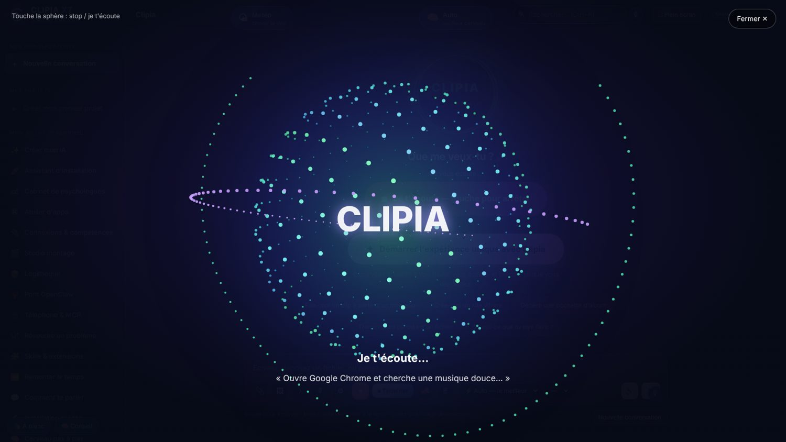
Studio : montage vidéo et musique par prompts NOUVEAU
Comme CapCut ou Canva, mais tu décris et Clipia monte : plan de scènes, images, musique, textes, export MP4. Dicte ton prompt avec le micro.
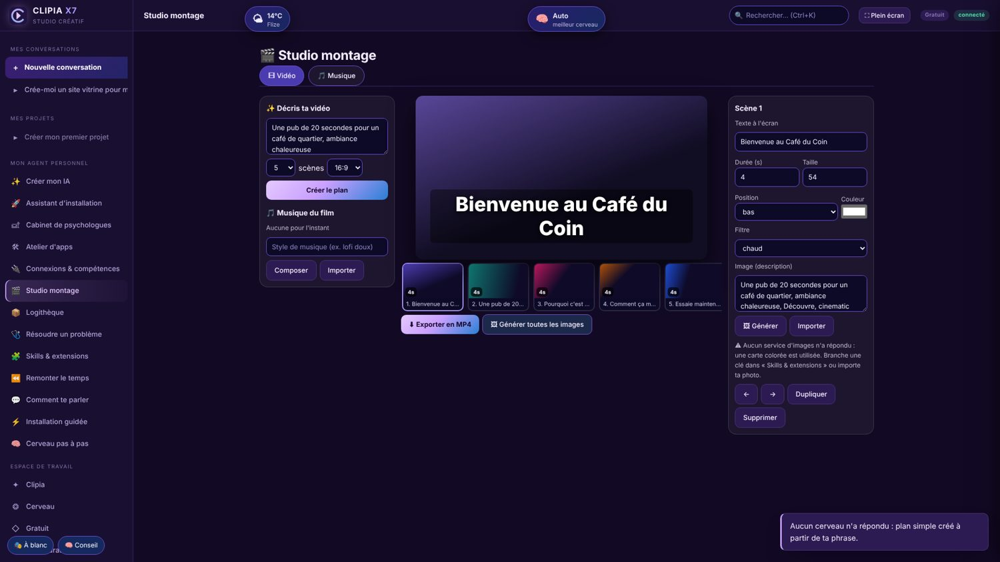
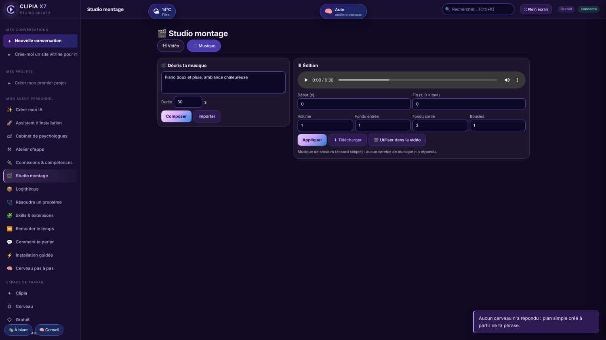
- Timeline + inspecteur de scène
- Musique : gratuite open source (sans clé), LMMS, ou Udio (payant, guide fourni)
- Créer un site ou une application avec une équipe d'agents codeurs
- Montage local avec FFmpeg, sans envoyer tes fichiers
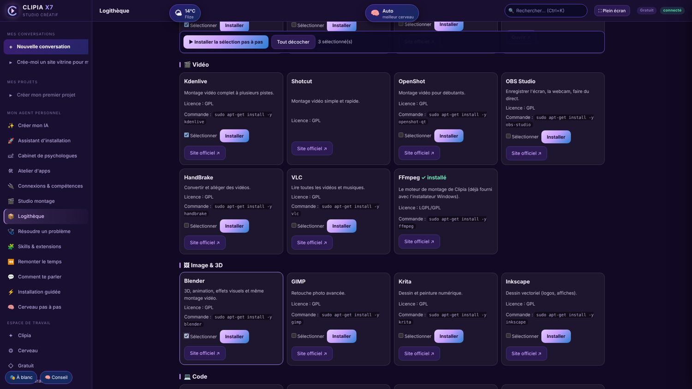
Une logithèque open source, choisie à l'installation NOUVEAU
À l'installation Windows, coche ce que tu veux : tout s'installe pour toi, un par un.
Les outils Google (AI Studio, Antigravity, Flow, Whisk, NotebookLM, Jules, Gemini) sont proposés avec un guide pas à pas et les clés gratuites rangées dans ton coffre.
Le Pont OpenClaw 🦞 NOUVEAU
Tu as déjà OpenClaw ? Clipia le détecte et reprend ses compétences. Tu ne l'as pas ? Les 50 compétences officielles sont livrées avec Clipia.
- Mail, agenda Google, GitHub, Notion, Obsidian, Trello, Whisper, voix locale, Spotify, Hue, PDF, diagrammes…
- Tes versions locales d'OpenClaw sont prioritaires.
- Import en un clic, ou compétence par compétence.
- Pont vers la commande
openclaw(état, modèles, tâches) — l'envoi de tâches demande ton accord.
Licence MIT — © OpenClaw Foundation. Clipia lit ces compétences comme des méthodes, jamais comme des ordres.
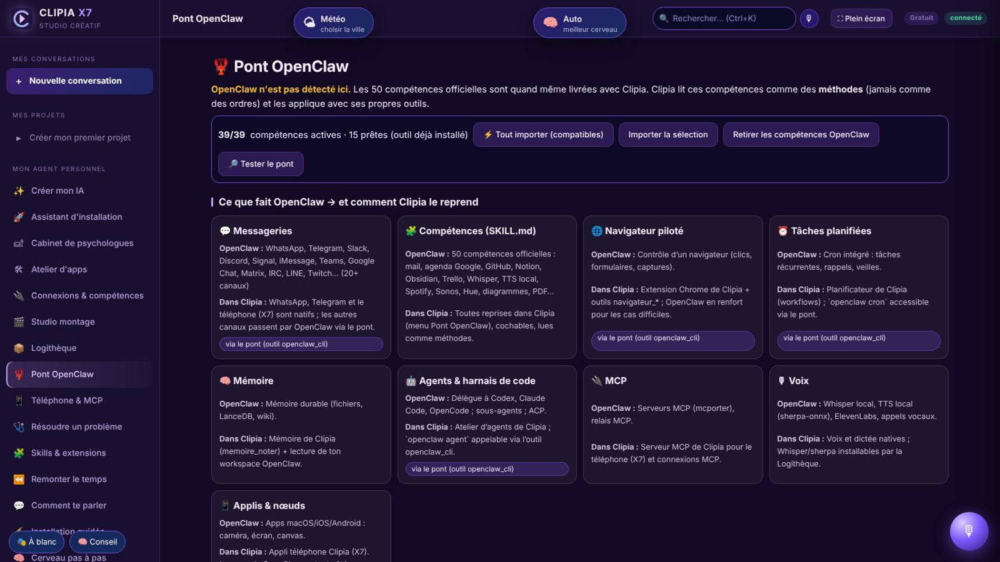
Ton téléphone pilote ton ordinateur NOUVEAU
Active l'accès dans Clipia : un QR code installe l'appli sur ton téléphone. Tu parles à Clipia de n'importe où, elle agit sur ton PC.
Menu « Téléphone & MCP » (ou case à l'installation).
Même Wi-Fi, ou Tailscale / Cloudflare pour sortir de chez toi.
Chrome : « Installer l'application ». Safari : « Sur l'écran d'accueil ».
Dictée vocale ; le contrôle du PC demande ton accord sur le PC.
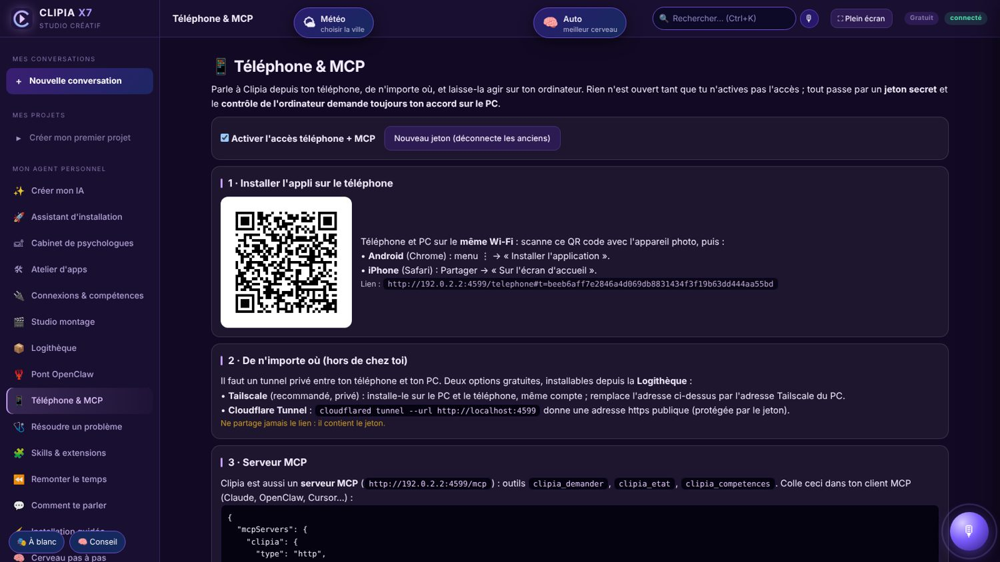
Serveur MCP intégré
Clipia est aussi un serveur MCP : ajoute-la à Claude, OpenClaw ou Cursor. Jeton secret, désactivé par défaut.
Et encore…
Skills & extensions Google, dépannage par capture d'écran, atelier d'apps.
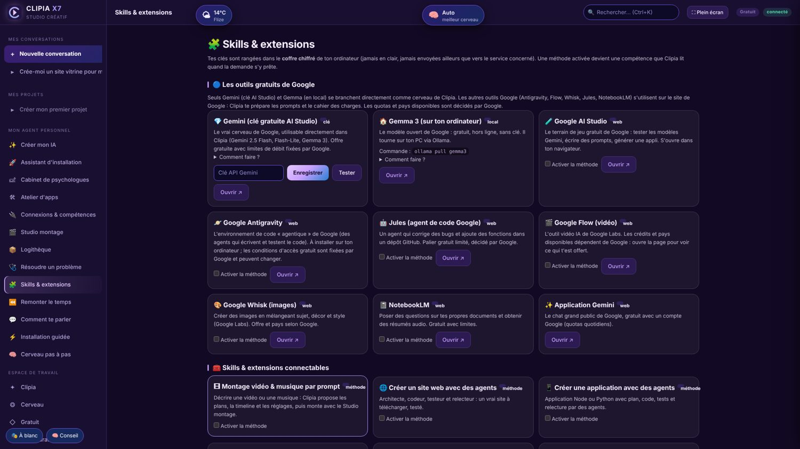
Skills & extensions : Gemini gratuit, Gemma, AI Studio, Antigravity, Flow… clés dans le coffre.
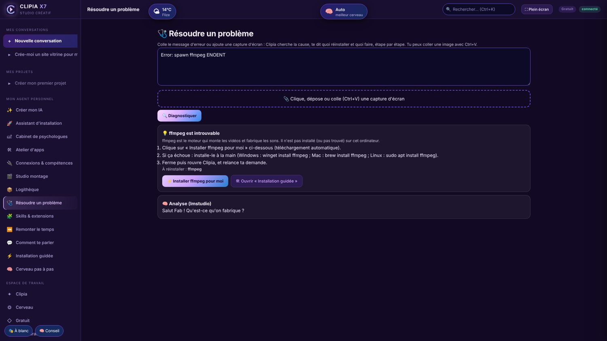
Résoudre un problème : capture ou texte → cause, solution, ce qu'il faut réinstaller.
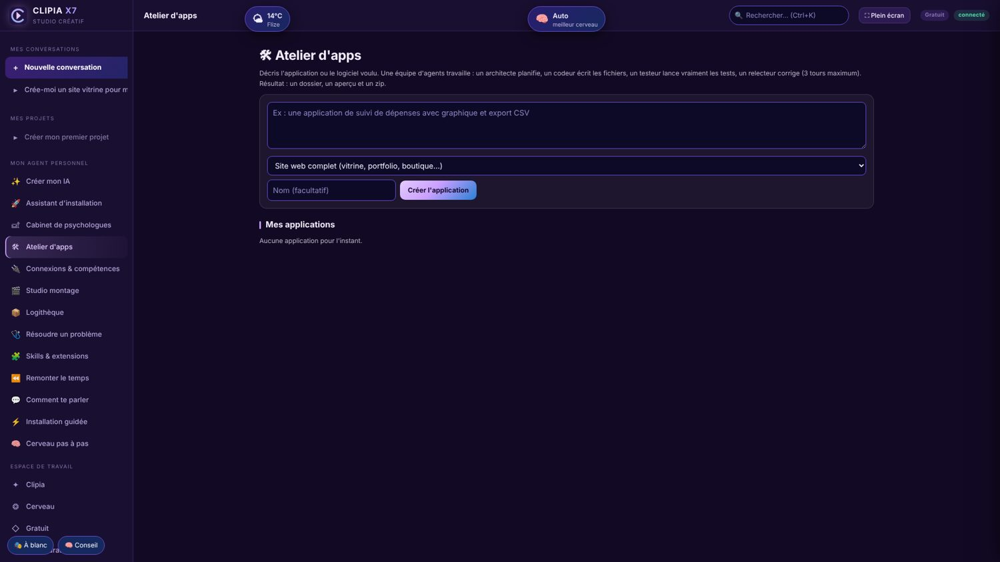
Atelier d'apps : sites, applications et jeux construits par une équipe d'agents.
Une installation guidée, image par image
L'installeur Windows te laisse cocher tes logiciels libres. Au premier lancement, Clipia se présente en plein écran en 3D, puis t'accompagne : cerveaux gratuits, OpenClaw, téléphone et MCP, essai réel.
Chaque étape est facultative : tu peux passer, revenir en arrière, ou tout reprendre plus tard depuis le menu « Assistant d'installation ».
« Comment veux-tu que je te parle ? »
À la fin de l'installation, Clipia te demande le style de votre conversation. Tu peux le changer à tout moment, ou créer le tien.
🧠 Psychologue personnel
- Écoute active, questions ouvertes, petits exercices concrets.
- Se souvient de vos séances : le carnet reste uniquement sur ton ordinateur, consultable et effaçable.
- Honnête sur ses limites : c'est une IA, pas une psychologue diplômée, elle ne pose pas de diagnostic et ne remplace pas un professionnel.
- En cas de détresse, elle t'oriente vers le 3114 (24 h/24, gratuit) ou le 15 / 112.
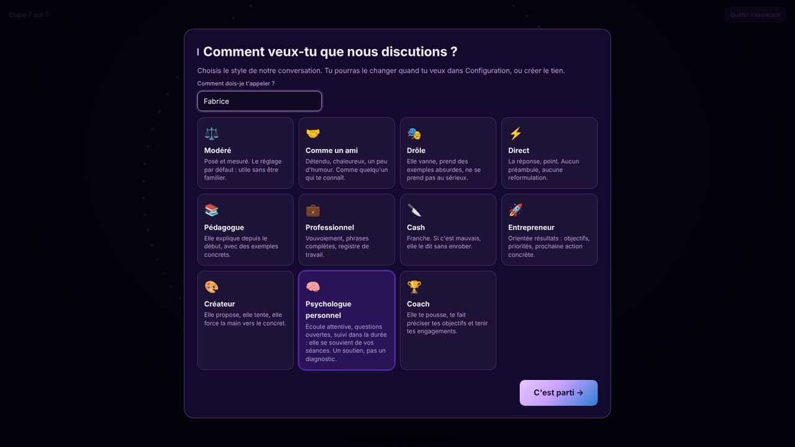
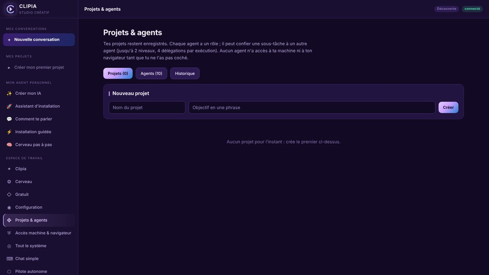
Autonome, et elle apprend de toi
Clipia ne se contente pas de répondre : elle comprend, planifie, agit, puis vérifie.
- Agent personnel : elle crée des agents et sous-agents (codeur, chercheur, rédacteur, planificateur, créateur…), des workflows et des projets.
- Mémoire totale : conversations, recherches, fichiers, créations. Elle reprend une conversation là où tu l'as laissée.
- Elle apprend de ses erreurs : chaque échec est archivé comme leçon et resservi quand c'est utile.
- Compétences importables : elle reprend les compétences d'OpenClaw (SKILL.md) que tu choisis.
- Elle peut améliorer son propre code, avec ton accord à chaque changement, sauvegarde automatique et retour arrière.
- Pilote autonome : des tâches programmées qui tournent sans toi.
Précision honnête : « apprendre » veut dire mémoriser, tirer des leçons et s'équiper de nouvelles compétences. Clipia ne ré-entraîne pas les modèles d'IA.
62 moteurs d'IA, à ta main
Clipia choisit le plus rapide qui répond et bascule toute seule si l'un tombe. Tes clés restent chiffrées dans le coffre, sur ton ordinateur.
Gratuits
- Groq (ultra-rapide)
- Cerebras
- SambaNova
- Hugging Face
- GitHub Models
- NVIDIA NIM
- Cloudflare Workers AI
- Scaleway
Locaux, sans internet
- Ollama — Qwen 3, Qwen 2.5, Llama, DeepSeek R1, Gemma, Mistral…
- LM Studio, llama.cpp, GPT4All, Jan, vLLM
- OpenClaw (passerelle locale)
- Piper (voix), whisper.cpp (transcription)
Cloud premium (ta clé)
- Claude, OpenAI, Gemini
- Mistral, DeepSeek, xAI Grok
- Perplexity, Cohere, Qwen / Alibaba
- OpenRouter (300+ modèles)
- Images, vidéo, voix, musique : Stability, fal, Runway, Luma, ElevenLabs, Suno…
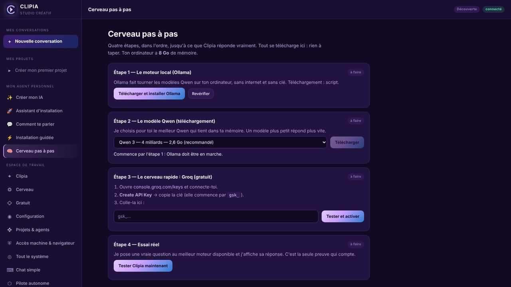
Un vrai cerveau, étape par étape
- Étape 1 : Ollama, installé pour toi.
- Étape 2 : Qwen choisi selon la mémoire de ta machine, avec barre de progression.
- Étape 3 : Groq, ta clé gratuite testée avant activation.
- Étape 4 : un essai réel pour prouver que ça répond.
38 connecteurs pour tout relier
Publier, vendre, coder, discuter : Clipia agit dans tes outils, avec ton accord.
Diffusion
YouTube, TikTok, Instagram, Facebook, X (Twitter), Twitch, LinkedIn, Pinterest, Reddit
Musique
Spotify, SoundCloud, Bandcamp, DistroKid
Fichiers et notes
Google Drive, Dropbox, Notion, Amazon S3, Airtable
Boutique et paiement
Etsy, Shopify, Printful, Stripe, PayPal, Lemon Squeezy
Code et mise en ligne
GitHub, GitLab, Netlify, Vercel, Cloudflare Pages
Messagerie et automatisation
WhatsApp Business, Telegram, Signal, Discord, Slack, e-mail SMTP, Webhook, MCP, n8n
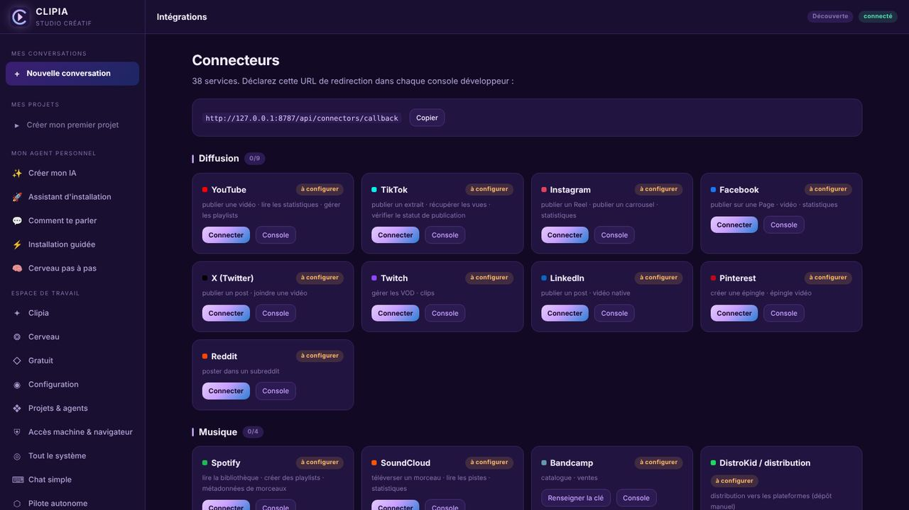
Tu connectes un service en un clic ; chaque publication demande ton accord.
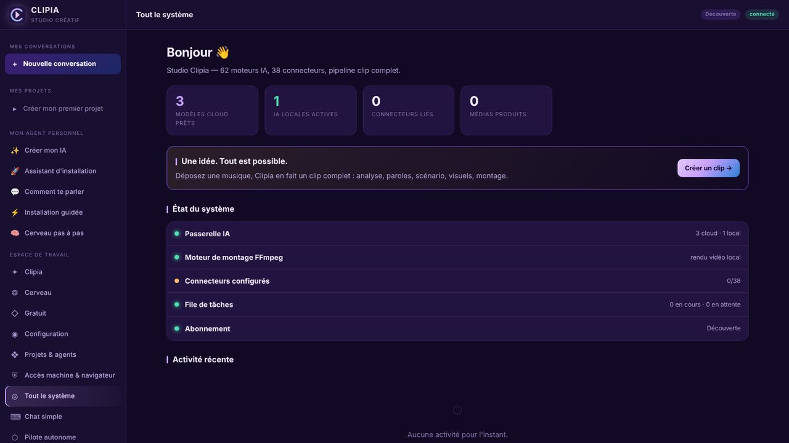
L'état de ton studio d'un coup d'œil.
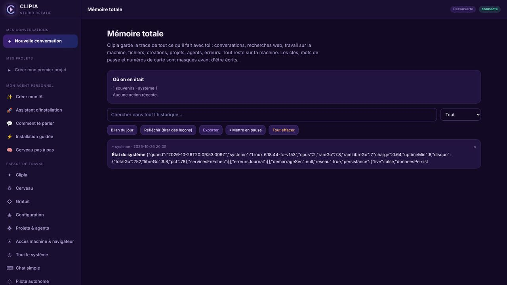
Tout ce qu'elle a fait et retenu, que tu peux chercher, exporter ou effacer.
Un accès complet… sous ton contrôle
Tu coches ce que Clipia peut utiliser : navigateur Chrome, fichiers, code, micro, son, système, clavier et souris.
- Rien n'est activé sans ton clic.
- Même coché, chaque action sensible demande une autorisation de 10 minutes, avec arrêt d'urgence.
- Elle ne tape jamais un mot de passe ni un numéro de carte.
- Ce qu'elle lit sur une page est une donnée, jamais un ordre.
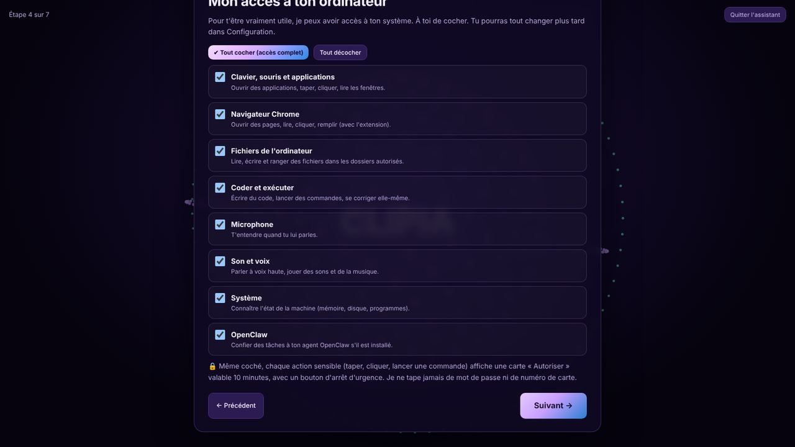
Tout ce que fait Clipia X8
Un seul endroit pour créer, organiser et automatiser.
Clipia est gratuite. Le cabinet de psychologie, 2 h offertes.
Le logiciel complet — voix, studio, agents, OpenClaw, téléphone, MCP — ne coûte rien. Seul le cabinet de psychologie fonctionne au temps passé.
Clipia X8
- Toutes les fonctions, sans limite de temps
- Moteurs gratuits et locaux (Gemini gratuit, Groq, Gemma, Qwen, Ollama…)
- Studio, logithèque, OpenClaw, téléphone, MCP
- Aucune carte bancaire
2 h offertes, puis 5 € / h
- Psychologues personnels (Élise, Julien, Nadia) avec carnet de séances
- 2 heures offertes au départ
- Les heures achetées ne périment pas
- Paiement sécurisé — bientôt disponible
Les modèles payants des fournisseurs (OpenAI, Claude…) se facturent chez eux, avec ta propre clé. Clipia accompagne mais ne remplace pas un professionnel de santé.
Télécharger Clipia
Version 8.0.0 · gratuit · Node.js déjà inclus.
Les logiciels ne sont pas signés par un éditeur payant : Windows (« Exécuter quand même ») et macOS (clic droit → Ouvrir) afficheront un avertissement normal. Vérifie l'empreinte SHA-256 sous chaque fichier. Extrais toujours tout le zip avant de lancer Clipia.exe (ne le lance pas depuis WinRAR).
📱 Appli téléphone
Application installable depuis ton navigateur (Android et iPhone), ou APK Android. Pour piloter ton PC : active « Téléphone & MCP » dans Clipia X8 et scanne le QR code.

Clipia — application téléphone
Android (Chrome) : « Installer l'application ». iPhone (Safari) : Partager → « Sur l'écran d'accueil ».
Il n'existe pas d'application sur l'App Store ni sur Google Play pour l'instant.
Installer en 3 minutes
Windows — installeur ou image .iso
- Télécharge
Clipia-Setup-6.0.4-windows-x64.exe(ou l'image.iso: double-clic pour l'ouvrir, puis lance le Setup). - Si Windows dit « protégé votre PC » : Informations complémentaires → Exécuter quand même.
- Suivant → Installer → Terminer : l'assistant plein écran s'ouvre tout seul.
Windows — portable (clé USB)
- Télécharge le zip portable.
- Clic droit → Extraire tout dans un dossier (pas depuis WinRAR).
- Double-clique Clipia.exe. En cas de souci : Diagnostic-Clipia.bat.
macOS
- Télécharge le zip macOS et dézippe-le.
- Glisse Clipia.app dans Applications.
- Premier lancement : clic droit → Ouvrir.
Linux (Debian, Ubuntu, Mint)
- Télécharge le
.deb. sudo apt install ./clipia_6.0.4_amd64.deb- Lance
clipia.
Questions fréquentes
Prête à travailler avec toi.
Télécharge Clipia gratuitement et laisse-la te guider.
⬇ Télécharger X8 — gratuitLe créateur
Clin Fabrice — CLENDAX
Clipia est créé et maintenu par Clin Fabrice, basé à Flize (Ardennes, France).
Contact : fabriceclin02@gmail.com · WhatsApp +33 7 51 88 06 50